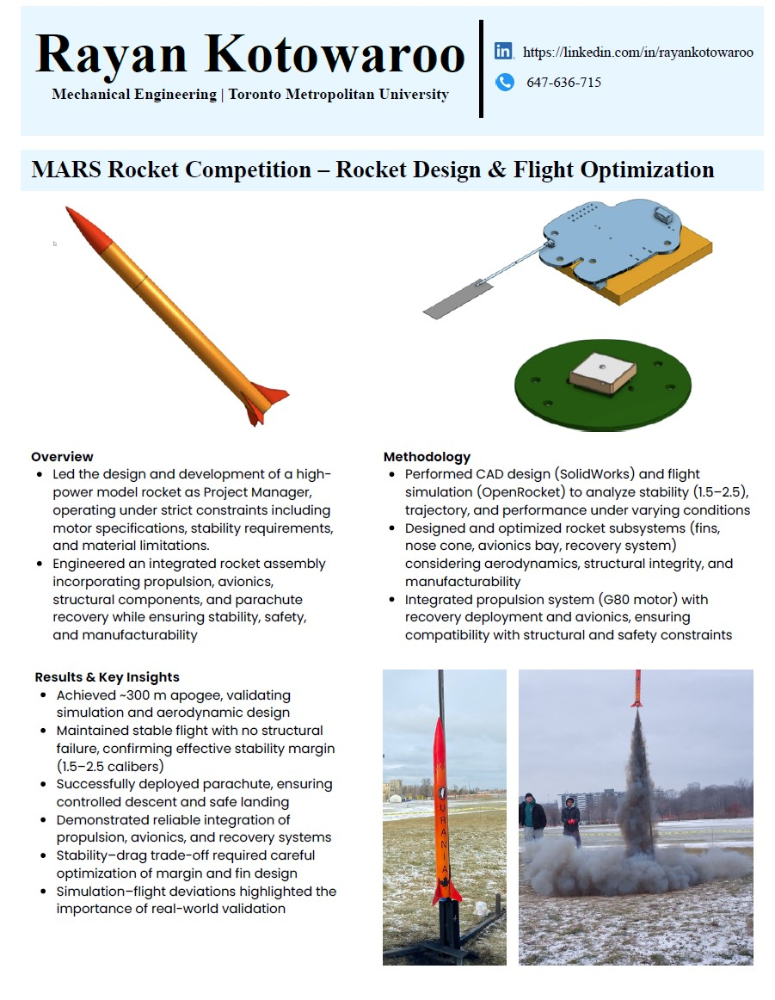
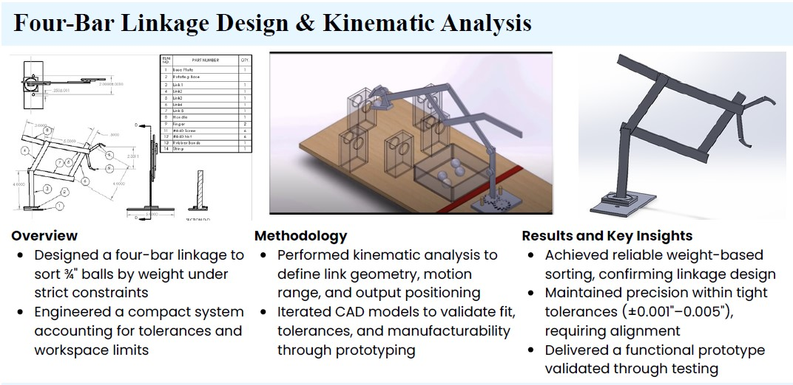
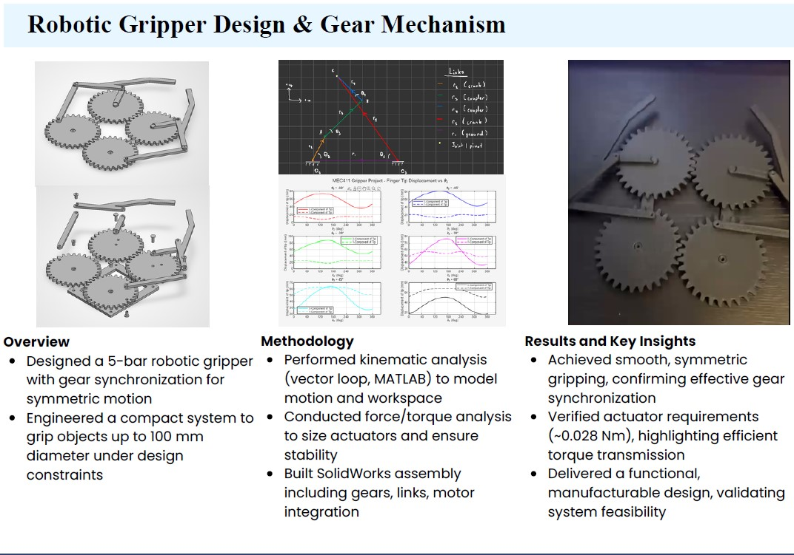
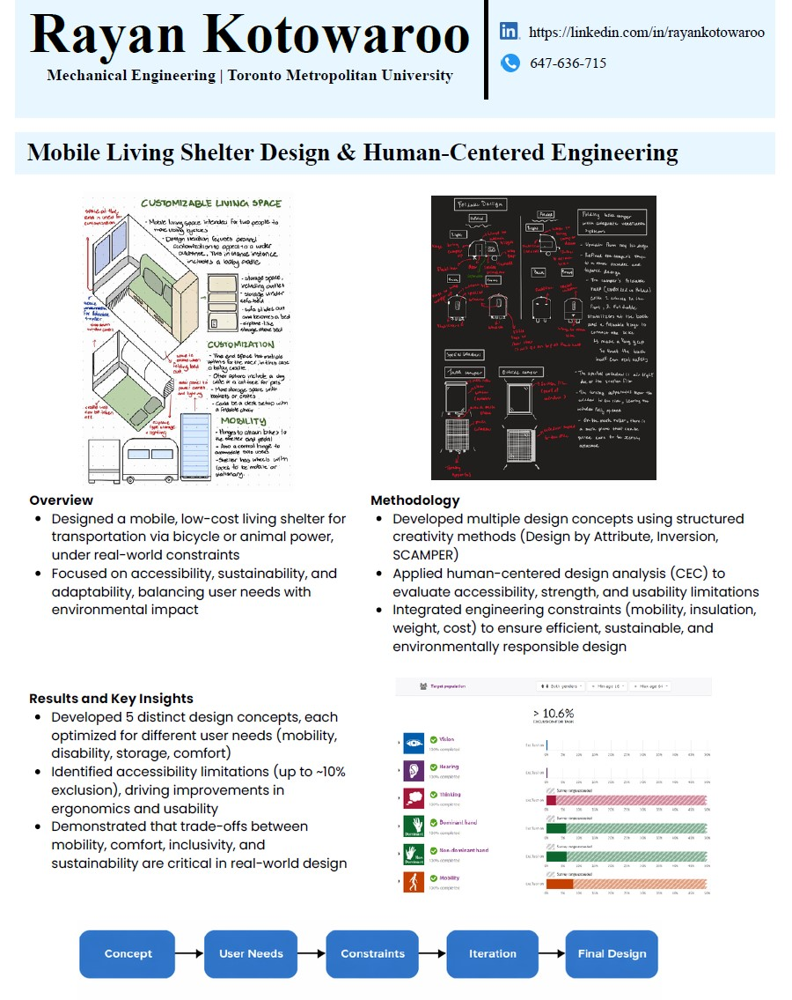
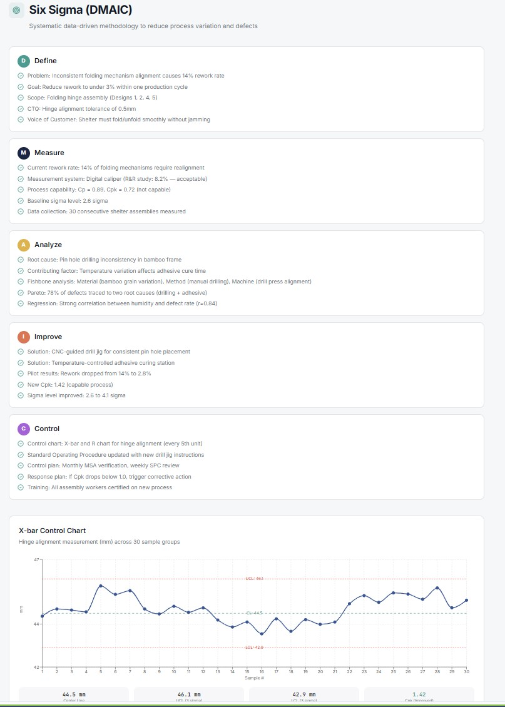
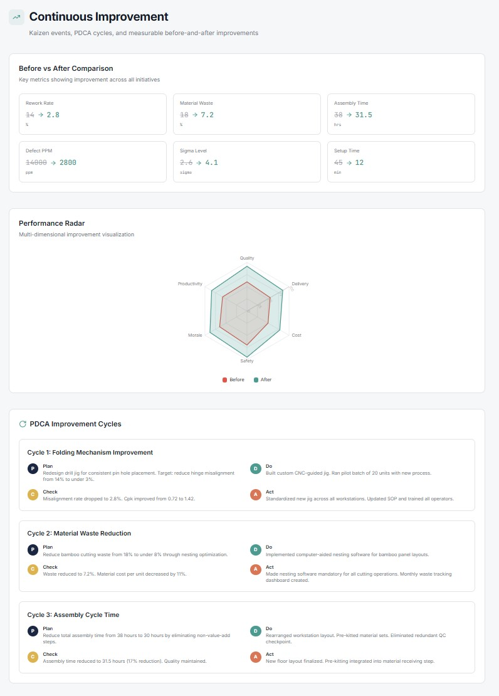

About Me
Fourth-year Mechanical Engineering student with strong experience in mechanical design, CAD modeling, and system optimization. Skilled in SolidWorks (CSWP), AutoCAD, and engineering analysis, with hands-on experience building and testing functional prototypes. Focused on developing efficient, constraint-driven designs supported by simulation and real-world validation.
Projects
MARS Rocket Competition – Project Management & Flight Optimization
Key Impact: Achieved ~300 m apogee with stable flight (1.5–2.5 calibers), validating aerodynamic and structural design
Tools: SolidWorks, MATLAB, OpenRocket
Led a 6-member multidisciplinary team, managing timelines and tracking milestones to ensure successful design, testing, and launch execution under strict constraints
• Designed and optimized rocket subsystems in SolidWorks, focusing on aerodynamic stability and structural integrity
• Validated trajectory and flight performance using MATLAB and OpenRocket simulations, achieving ~300 m apogee • Maintained stable flight with a 1.5–2.5 caliber margin, confirming design reliability under real launch conditions
Industrial Fluid System Optimization
Key Impact: Reduced TDH from 60.9 m → 31.4 m, achieving 35.7% cost reduction (~$137k → ~$88k) while eliminating cavitation risk through NPSH validation
Tools: AutoCad, Excel, Power BI, MATLAB
• Designed and optimized a fluid transport system using hydraulic analysis (Darcy–Weisbach, TDH, NPSH), evaluating multiple configurations
• Developed system layouts and schematics in AutoCAD to support design visualization and component placement • Reduced total dynamic head from 60.9 m to 31.4 m, achieving ~35.7% cost reduction while eliminating cavitation risk through NPSH validation

Four-Bar Linkage Design & Kinematic Analysis
Key Impact: Achieved reliable weight-based sorting with precision tolerances (±0.001"–0.005%), validating mechanism performance
Tools: SolidWorks, MATLAB, Excel
• Designed a four-bar linkage mechanism in SolidWorks to sort ¾” balls by weight under strict spatial and tolerance constraints
• Performed kinematic analysis to optimize link geometry, motion range, and output positioning through iterative CAD refinement • Achieved reliable sorting with precision tolerances (±0.001"–0.005"), delivering a fully functional prototype validated through testing
Robotic Gripper Design & Gear Mechanism
Key Impact: Achieved smooth, synchronized gripping with efficient torque transmission (~0.028 Nm), validating gear-driven mechanism performance
Tools: SolidWorks, MATLAB, Excel
• Designed a 5-bar robotic gripper in SolidWorks with gear synchronization to ensure symmetric motion and stable gripping
• Performed kinematic and force analysis (vector loop, MATLAB) to model motion, workspace, and actuator requirements • Delivered a functional, manufacturable assembly integrating gears, linkages, and motor components
Mobile Living Shelter Design
Key Impact: Developed a low-cost, mobile shelter concept balancing accessibility, sustainability, and real-world design constraints
Tools: SolidWorks, Revit, AutoCad, Excel
• Designed a compact mobile shelter system under mobility, weight, and cost constraints, optimizing for real-world usability
• Developed and evaluated multiple design concepts, integrating accessibility, ergonomics, and environmental considerations • Produced CAD layouts and engineering drawings, refining the final design through iteration and constraint-driven decision making
Manufacturing & Process Analysis
Key Impact: Improved workflow efficiency and process consistency through Lean analysis and structured process evaluation.
Tools: Excel, Lean Six Sigma, Process Mapping
• Developed process flow diagrams to analyze and optimize manufacturing workflows and system layout.
• Identified inefficiencies and redesigned process structure to improve consistency and operational efficiency • Applied structured analysis to support system-level improvements and workflow standardization.

Relevant Coursework
Fluid Mechanics I & II, Thermodynamics I & II, Heat Transfer, Machine Design, Manufacturing Processes, Engineering Graphics & CAD, Statistics, Engineering Economics
Technical Skills
CAD & Design: SolidWorks (CSWP), AutoCAD, Revit, Engineering Drawings, 3D Modeling, Assembly Design, OpenRocket
Analysis & Simulation: MATLAB, Python, Kinematic Analysis, Fluid System Analysis (TDH, NPSH)
Tools: Microsoft Suite (Excel, PowerPoint, Word), Power BI
Engineering: Prototyping, Testing & Validation, Design Optimization, Constraint-Based Design
Resume
LinkedIn: View Profile
Contact
Email: rayankotowaroo@gmail.com
Phone Number: +1 (647) 636-0715